Plotting lag sequential models
Written by Mohammed Saqr and Sonsoles López-Pernas
Source:vignettes/articles/plotting.Rmd
plotting.RmdA lag sequential model is a table: for every ordered pair of states it holds the observed count of the transition, the count expected if successive events were independent, the transition probability, and the adjusted residual that measures the departure from chance. Each display in the package draws that table in a different geometry, and each geometry suits a different question. A residual heatmap answers which transitions are favoured or avoided. A residual network shows the same answer as directed edges, so paths through the process can be traced. A transition network draws the probabilities instead, and answers where the process tends to go next. A chord diagram and a sunburst show how the outgoing flow of each state is divided. Forest plots add the interval of each edge, and barrel plots set two groups side by side.
All views of a fit come from one verb,
plot(fit, type = ); the inference results (bootstrap,
comparisons) have their own plot() methods. This guide
draws each display on the bundled data and says what it shows.
Data
-
engagement: weekly engagement states of 136 students over a course, three states (Active,Average,Disengaged). Used for the single-fit displays. -
group_regulation_long: an event log of nine collaborative regulation actions by 2,000 students. Actor:Actor. Action:Action. Time:Time. Group:Achiever(High,Low). Used for the grouped displays and the comparisons.
fit <- lsa(engagement)
transitions(fit, sort = "strength")
#> from to lag count expected prob prob_col adj_res p yules_q
#> 1 Active Active 1 459 247 0.698 0.7051 21.663 4.60e-104 0.828
#> 2 Disengaged Disengaged 1 157 60 0.483 0.4906 15.390 1.90e-53 0.754
#> 3 Average Active 1 153 282 0.204 0.2350 -12.906 4.16e-38 -0.601
#> 4 Active Disengaged 1 23 121 0.035 0.0719 -12.557 3.64e-36 -0.826
#> 5 Average Average 1 458 330 0.610 0.6003 12.453 1.35e-35 0.553
#> 6 Active Average 1 176 290 0.267 0.2307 -11.319 1.06e-29 -0.534
#> 7 Disengaged Active 1 39 122 0.120 0.0599 -10.549 5.11e-26 -0.698
#> 8 Disengaged Average 1 129 143 0.397 0.1691 -1.736 8.25e-02 -0.108
#> 9 Average Disengaged 1 140 139 0.186 0.4375 0.176 8.60e-01 0.011
#> kappa kappa_z kappa_p lift sign significant
#> 1 0.4438 19.19 4.68e-82 1.858 over TRUE
#> 2 0.3136 13.56 7.34e-42 2.618 over TRUE
#> 3 -0.4994 -14.70 6.81e-49 0.543 under TRUE
#> 4 -0.8272 -13.41 5.14e-41 0.189 under TRUE
#> 5 0.2275 9.83 7.97e-23 1.386 over TRUE
#> 6 -0.4242 -12.48 9.39e-36 0.608 under TRUE
#> 7 -0.7069 -11.46 2.03e-30 0.320 under TRUE
#> 8 -0.1618 -2.96 3.03e-03 0.902 under FALSE
#> 9 -0.0903 -1.66 9.79e-02 1.010 over FALSEThe table behind every display below: the three self-transitions are
favoured (z from 12.453 to 21.663), four moves between states are
avoided (z from -10.549 to -12.906), and two moves,
Disengaged -> Average and
Average -> Disengaged, are at chance.
| Display | Call | Draws |
|---|---|---|
| Residual heatmap | plot(fit) |
adjusted residuals (or probabilities, counts) |
| Residual network | plot(fit, type = "network") |
adjusted residuals as edges |
| Transition network | plot(fit, type = "network", weights = "tna") |
transition probabilities as edges |
| Chord diagram | plot(fit, type = "chord") |
transition flow, coloured by residual |
| Sunburst | plot(fit, type = "sunburst") |
each state’s outgoing distribution |
| Forest plot | plot(bootstrap_lsa(fit)) |
edge intervals |
| Barrel plot |
plot(compare_lsa(gfit)),
plot(bayes_compare_lsa(gfit))
|
two groups side by side |
Residual heatmap
A residual heatmap is the default display. Rows are the current state, ordered by how many transitions leave them, columns are the next state, and the fill is the adjusted residual on a diverging scale centred at zero: warm (red) cells are over-represented and cool (blue) cells avoided. The cell with the largest absolute residual in each row is labelled in bold.
plot(fit)
The three red cells are the self-transitions: each state tends to
repeat, most strongly Active (z = 21.663). Because the rows
are ordered by volume, they do not form a visual diagonal. The blue
cells are the avoided moves, and the two near-white cells,
Average -> Disengaged (z = 0.176) and
Disengaged -> Average (z = -1.736), are the moves that
occur at chance.
which changes the quantity in the cells:
"prob" for transition probabilities, "count"
for observed counts, "expected" for the counts expected
under independence. The probability heatmap uses a sequential scale
fixed from 0 to 1, and the bold cell of each row is its most likely next
state.
plot(fit, which = "prob")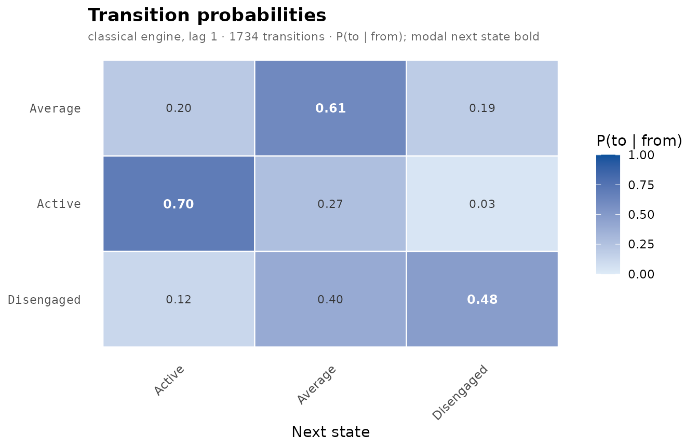
Every state’s most likely next state is itself. The probability view
also shows what the residual view hides: a disengaged student moves to
Average with probability 0.397, nearly as often as staying
disengaged (0.483), even though that move is no more frequent than
chance predicts.
Residual network
A residual network draws each transition as a directed edge whose width is the size of the adjusted residual, labelled with its value. It follows the colour convention of transition network analysis, which is the reverse of the heatmap: blue edges are over-represented, red edges are avoided.
plot(fit, type = "network")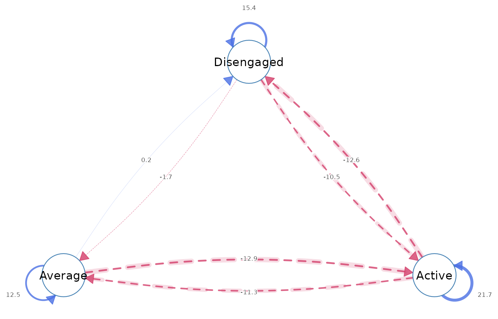
The blue self-loops carry the persistence, and the red edges between
Active and the other two states carry the avoidance:
students rarely move out of Active, and rarely move into
it. The faint edges between Average and
Disengaged are the two moves at chance.
With more states the network fills up: the nine-state regulation
process has 72 significant residuals out of 81.
significant = TRUE keeps only the significant edges, and
top keeps the strongest ones by absolute residual.
fit_regulation <- lsa(group_regulation)
transitions(fit_regulation, sort = "strength") |> head(5)
#> from to lag count expected prob prob_col adj_res p yules_q kappa
#> 1 emotion cohesion 1 923 190.9 0.3253 0.5373 58.2 0.00e+00 0.860 0.439
#> 2 discuss synthesis 1 557 106.8 0.1410 0.8072 48.0 0.00e+00 0.927 0.721
#> 3 synthesis adapt 1 153 13.6 0.2347 0.2881 38.8 0.00e+00 0.904 0.256
#> 4 discuss plan 1 46 961.6 0.0116 0.0074 -36.9 2.20e-298 -0.943 -0.955
#> 5 consensus consensus 1 519 1578.7 0.0820 0.0815 -35.5 5.32e-276 -0.661 -0.691
#> kappa_z kappa_p lift sign significant
#> 1 55.0 0.00e+00 4.8353 over TRUE
#> 2 46.1 0.00e+00 5.2168 over TRUE
#> 3 37.0 2.44e-299 11.2837 over TRUE
#> 4 -38.2 2.88e-319 0.0478 under TRUE
#> 5 -37.6 7.65e-309 0.3287 under TRUE
plot(fit_regulation, type = "network", top = 15)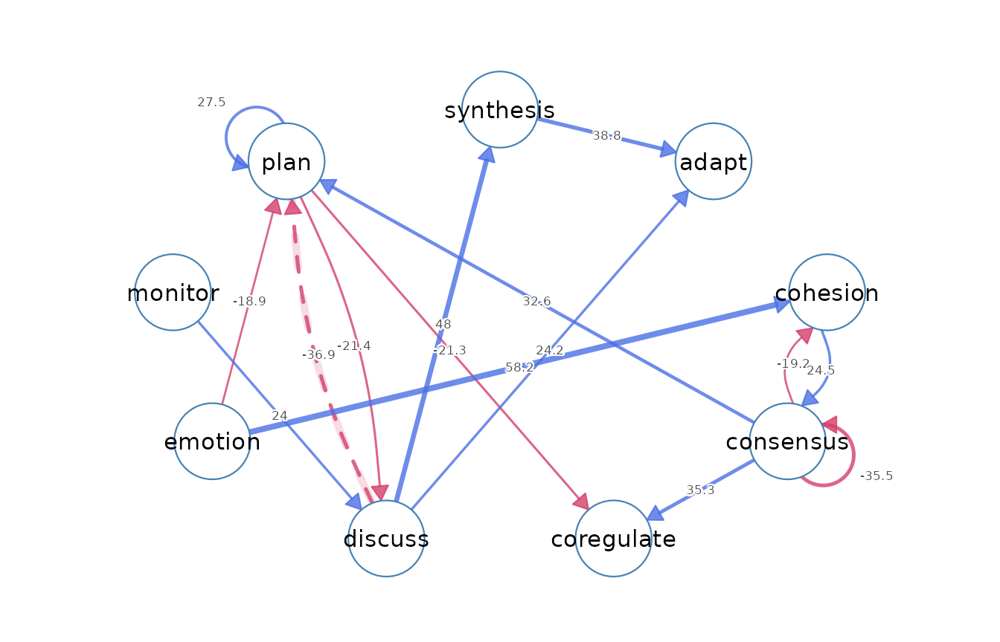
The fifteen strongest edges trace the main route through the process,
emotion -> cohesion (z = 58.2) and
discuss -> synthesis -> adapt (z = 48.0 and 38.8),
and the strongest avoidances, discuss -> plan (z =
-36.9) and the repetition of consensus (z = -35.5).
Transition network
With weights = "tna" the edges carry transition
probabilities and the display becomes the transition network of
transition network analysis, drawn by cograph::splot():
coloured nodes, a ring on each node for its initial probability, and
edges weighted by the probability of the move.
plot(fit, type = "network", weights = "tna")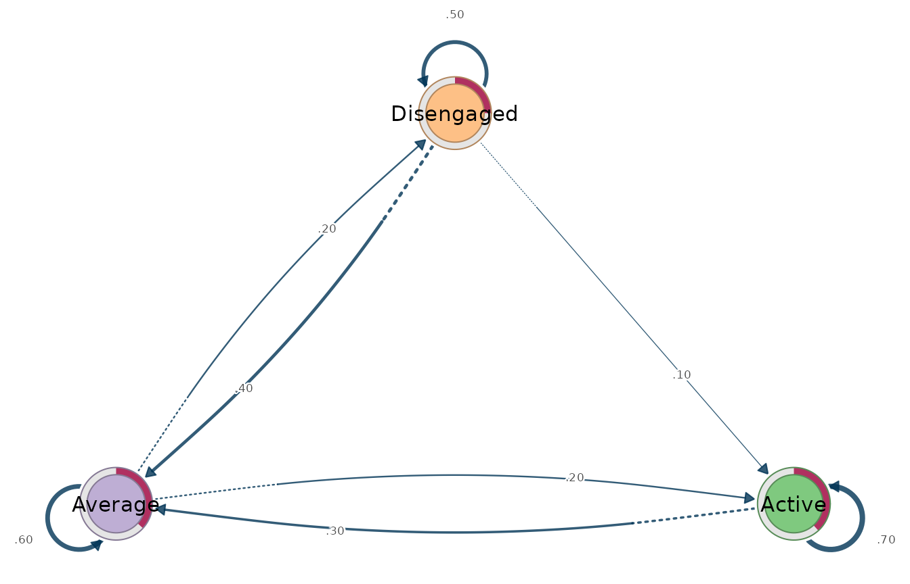
The self-loops are the heaviest edges (probabilities 0.698, 0.610,
and 0.483), and the edge from Disengaged to
Average (0.397) is heavier than any other move between
states. The transition network shows how often each move happens; it
does not show whether that is more or less often than chance, which is
the question the residual network answers.
Chord diagram
A chord diagram places the states on a circle and draws each
transition as a ribbon whose width is its count; the ribbon colour is
the adjusted residual, warm for over-represented and cool for avoided
transitions, as in the heatmap. width = "prob" sizes
ribbons by probability instead.
plot(fit, type = "chord")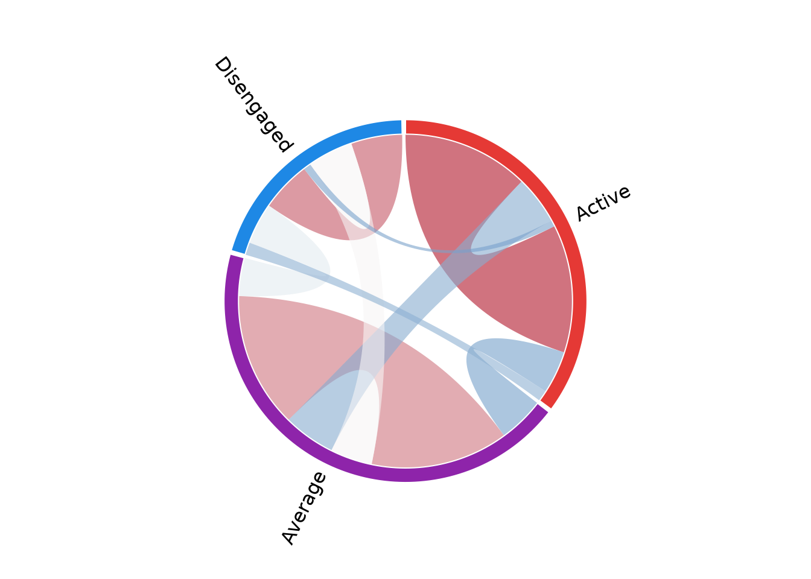
The warm self-transition ribbons of Active and
Average take most of the circle, and the thin cool ribbons
connect Active with the other two states. The chord diagram
shows the volume of each transition and its sign at once; it does not
label values, so it complements a heatmap rather than replacing it.
Sunburst
A sunburst draws each source state as a sector of a polar plot and divides it among the next states. The default rose style gives every cell the same angle and sets the bar height by count; the wedge style sets the angle by frequency. The fill is the adjusted residual on the heatmap scale.
plot(fit, type = "sunburst")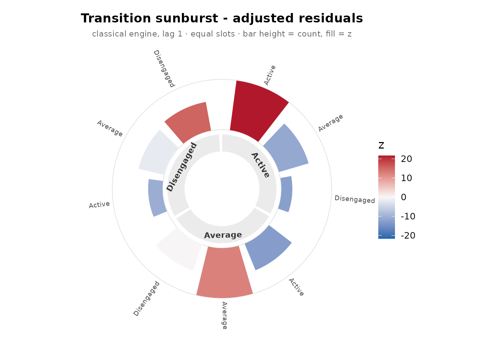
plot(fit, type = "sunburst", style = "wedge")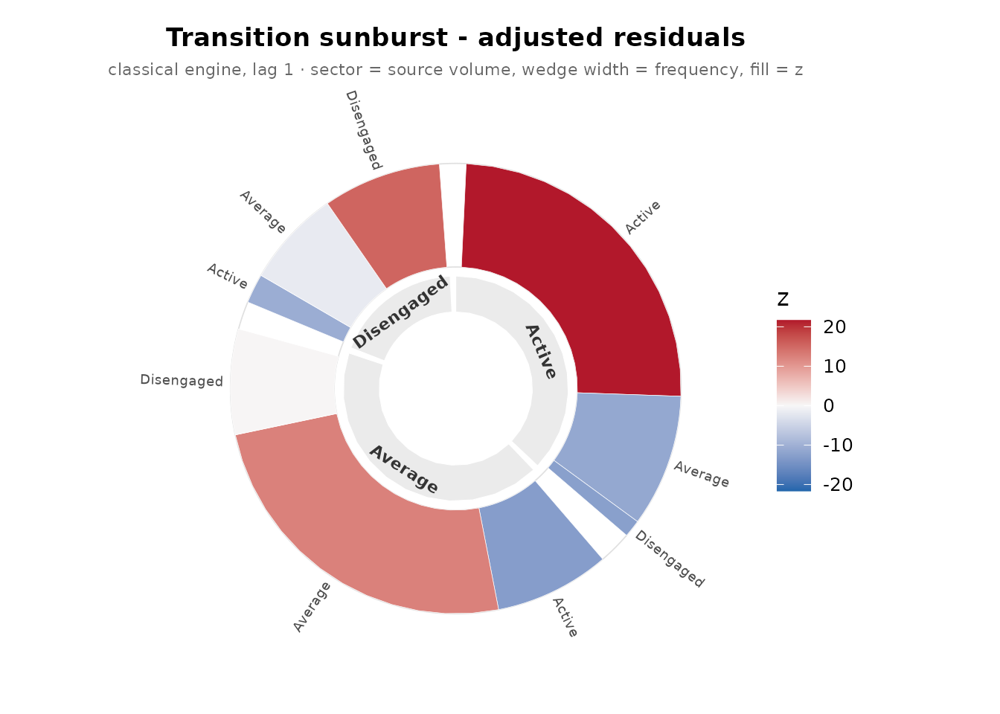
The inner ring holds the three source states and the outer ring their
next states. In the wedge style the large warm wedge of
Active -> Active shows that most of the flow out of
Active returns to it; the narrow cool wedges beside it are
the avoided exits.
Forest plots of edge uncertainty
A fitted residual is one estimate. A forest plot shows its interval: one row per edge, ordered by the observed residual, with non-significant edges in grey. The forest is circular: each spoke is an edge, the square is the estimate, the bar is the 95% interval, and the dashed ring marks zero. The bootstrap resamples whole sequences; the seed makes the resamples reproducible.
set.seed(2026)
boot <- bootstrap_lsa(fit, R = 1000)
plot(boot)
The seven significant residuals have intervals well clear of the
dashed ring, red outside it and blue inside, and the two moves at chance
(Disengaged -> Average,
Average -> Disengaged) sit on the ring in grey. None of
the conclusions drawn from the heatmap changes under resampling.
Barrel plots of a group comparison
A comparison needs a grouped fit. group = "Achiever"
fits one model for the high and one for the low achievers.
gfit <- lsa(group_regulation_long, actor = "Actor", action = "Action",
time = "Time", group = "Achiever")compare_lsa() tests every edge by permuting group labels
across sequences. The p-values are Benjamini-Hochberg adjusted
(adjust = "BH"), and the plot reports the adjusted values.
A barrel plot sets the two groups back to back: the first group’s
transition probability runs to the left and the second group’s to the
right, the bar labels give the counts, the fill gives the log odds
ratio, the group with the higher value is outlined (darker for a larger
difference), and the centre chip carries the p-value of the difference,
starred when significant.
set.seed(2026)
cmp <- compare_lsa(gfit, R = 1000, adjust = "BH")
cmp
#> <lsa_comparison>
#> groups: High vs Low
#> measure: log_or difference (High - Low)
#> R: 1000 label permutations
#> edges: 39 significant of 78 tested (adjust = BH)
#> omnibus: statistic = 79.48, p = 0.000999
plot(cmp)
Of the 78 edges tested, 39 differ after the correction, and the plot
shows seven of them among the twelve most frequent transitions. The high
achievers outweigh the low achievers on
discuss -> consensus (851 against 418 observations) and
consensus -> discuss (789 against 401); the low
achievers outweigh them on discuss -> synthesis (344
against 213).
The default rows are the twelve most frequent transitions, the
backbone of the process. rank = "effect" chooses the rows
by the strength of the association in either group, which brings the
avoided transitions into view.
plot(cmp, rank = "effect")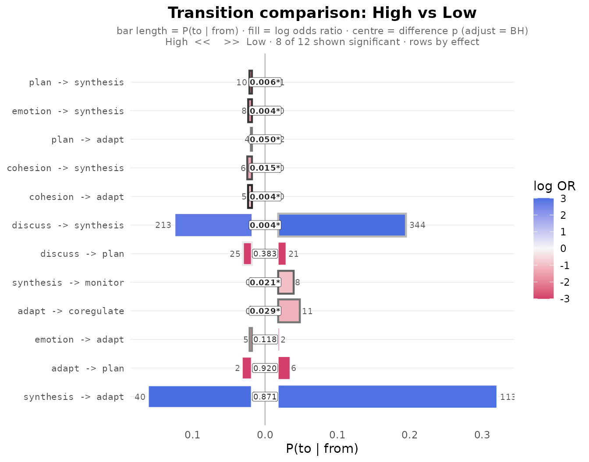
The effect ranking brings up rare transitions that both groups avoid,
red bars of a handful of observations, and shows that several of them
differ: emotion -> synthesis,
plan -> synthesis,
cohesion -> synthesis, and
cohesion -> adapt occur almost only among the high
achievers. Their counts are small, so these differences rest on few
events.
style = "heatmap" draws the difference for every cell of
the table at once.
plot(cmp, style = "heatmap")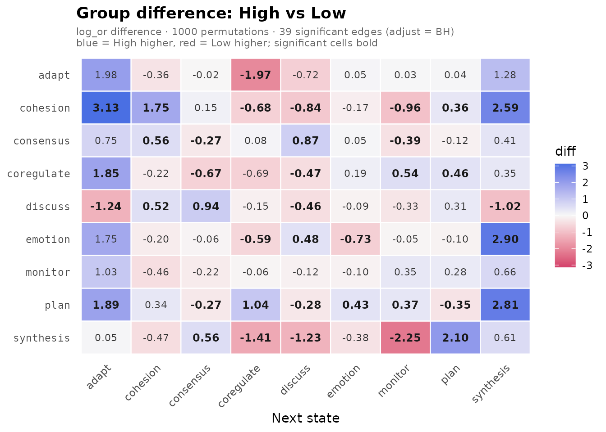
Blue cells are higher among the high achievers, red cells among the
low achievers, and significant cells are bold. The column of transitions
into synthesis and the column into adapt hold
the largest differences, with cohesion -> adapt the
largest of all.
The Bayesian comparison uses the same barrel. Its centre chip carries a two-sided Bayesian p-value from the Dirichlet-multinomial posterior of the difference in place of the permutation p-value, again Benjamini-Hochberg adjusted.
bcmp <- bayes_compare_lsa(gfit, adjust = "BH", seed = 2026)
bcmp
#> <lsa_bayes> (Bayesian Dirichlet-Multinomial comparison)
#> groups: High vs Low
#> prior: Dirichlet(0.50) | draws: 10000 | CI: 95%
#> edges: 38 credibly different of 81 compared
plot(bcmp)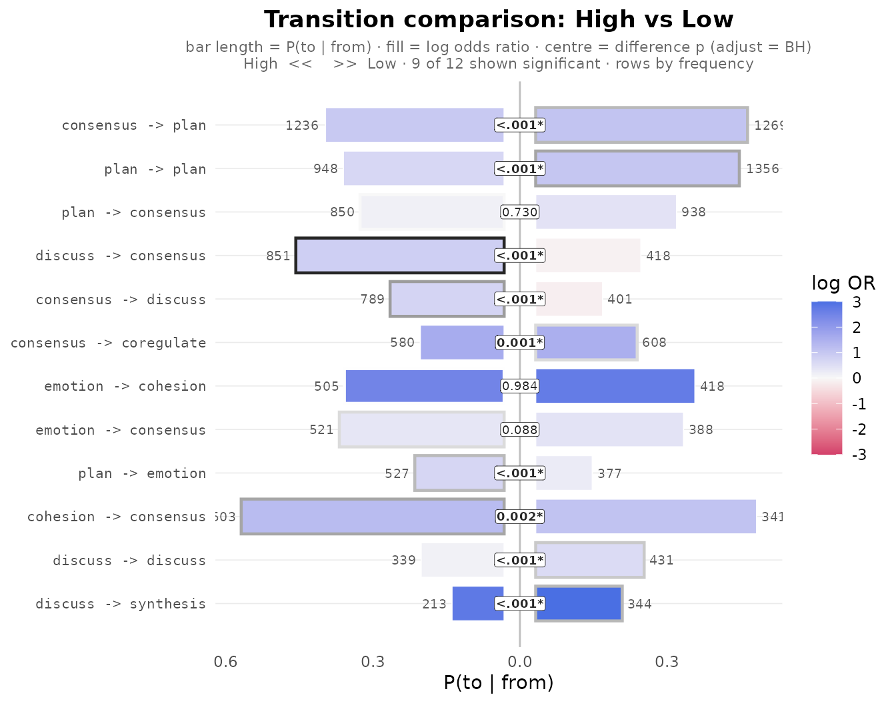
The Bayesian comparison finds 38 credibly different edges of the 81
compared, close to the 39 of the permutation test. Among the twelve
frequent transitions it marks nine as different, against seven in the
permutation barrel. The two tests answer different questions: the
Bayesian comparison tests the transition probabilities, the permutation
test the log odds ratios. consensus -> plan differs in
probability between the groups but not in its association, and the
barrels show both answers side by side.
Grouped fits
Every type works on a grouped fit. By default each group
is drawn as its own full-size figure, titled with the group name.
plot(gfit)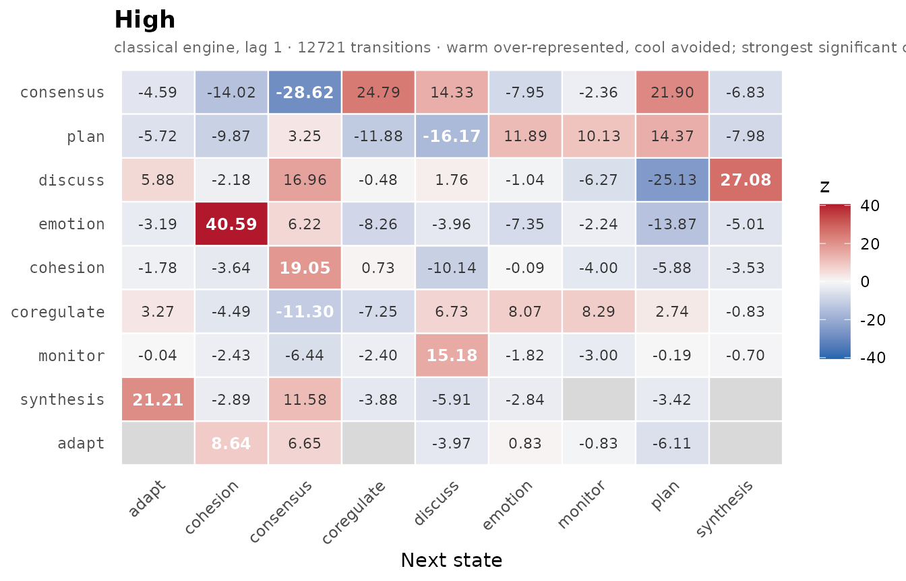
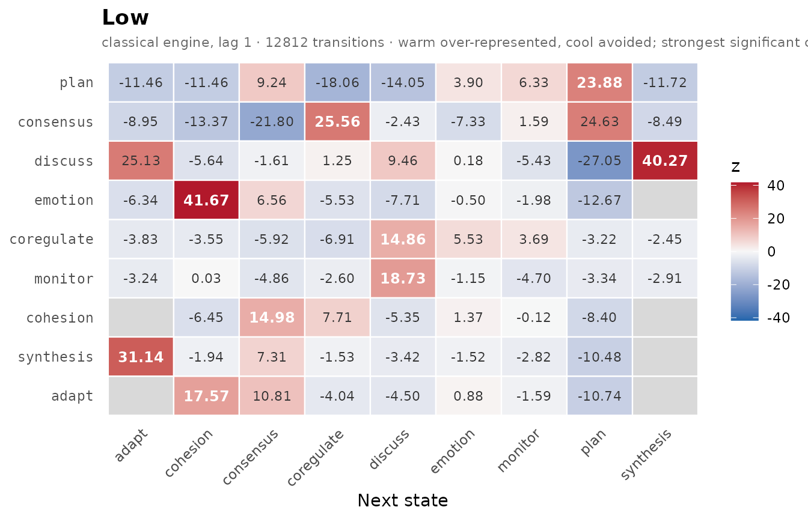
Each heatmap orders its rows by the group’s own outgoing volume, so
the row order differs between the groups; compare cells by their labels.
Grey cells are transitions that never occur in that group. The strongest
cell in both groups is emotion -> cohesion.
combined = TRUE tiles the groups into one figure, which
suits the networks.
plot(gfit, type = "network", top = 12, combined = TRUE)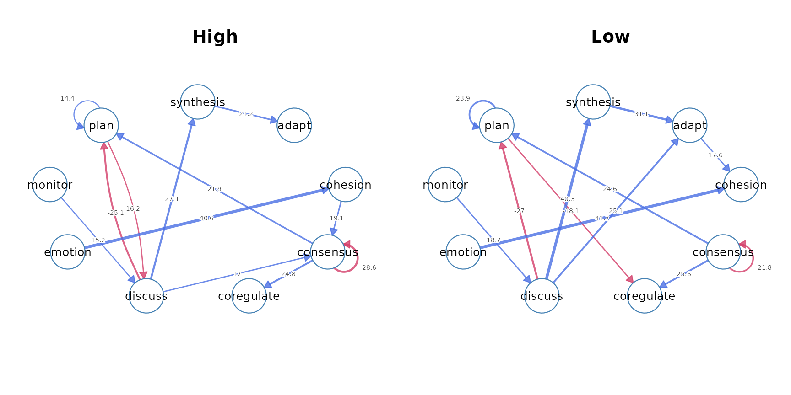
Drawn with the same layout, the two residual networks share
emotion -> cohesion, the route
discuss -> synthesis -> adapt, and the avoided
repetition of consensus. Only the low achievers’ twelve
strongest edges include discuss -> adapt and
adapt -> cohesion.
The worker functions
plot(fit, type = ) passes its extra arguments to one
worker per display, and each worker documents the full set of options:
plot_transitions() for the networks,
plot_chords() for the chord diagram,
plot_polar() for the sunburst, and
plot_forest() for the forest plots. Calling a worker
directly is equivalent. For example, the forest plot of Yule’s Q for the
five strongest edges:
plot_forest(boot, metric = "yules_q", n_top = 5)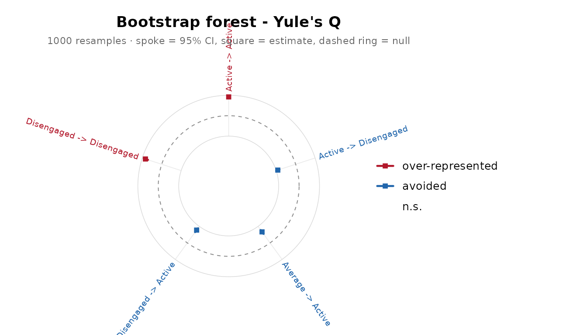
The five edges with the largest absolute Yule’s Q are the three
self-transitions and two avoided moves into and out of
Active; every interval lies clear of zero, so the strength
of these associations holds across resamples as well as their sign.
When to use which
| Question | Display |
|---|---|
| Which transitions are favoured or avoided? | Residual heatmap |
| Which paths through the process are favoured? | Residual network, significant = TRUE or
top = with many states |
| Where does the process tend to go next? | Transition network (weights = "tna") |
| How is each state’s outgoing flow divided? | Chord diagram, sunburst |
| How precise is each edge? | Forest plot of the bootstrap result |
| Which transitions differ between two groups? | Barrel plot; rank = "effect" for avoided
transitions |
| What does each group look like? |
plot(gfit), or combined = TRUE for one
figure |
The residual displays carry the lag sequential claim, which transitions depart from chance. The probability displays describe the process without a reference to chance. A report that shows a transition network should say so, since a heavy edge there can be a transition that occurs no more often than chance predicts.